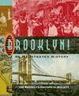

| Brooklyn!
An Illustrated History
Snyder-Grenier, Ellen M. A colorful history of Brooklyn, its monuments, and its residents
New in Paperback!
304 pp • 8x10 • Spring 1996
paper 1-59213-082-8
EAN 978-1-59213-082-5 |
| Consumed
in the City
Observing Tuberculosis at Century's End
Draus, Paul How the new tuberculosis epidemic and urban life
collide
304 pp • 6x9 • Spring 2004
paper 1-59213-249-9
EAN 978-1-59213-249-2
cloth 1-59213-248-0
EAN 978-1-59213-248-5 |
| Cowboys
as Cold Warriors
The Western and U.S. History
Corkin, Stanley The classic westerns read as fables
288 pp • 6x9 • Spring 2004
paper 1-59213-254-5
EAN 978-1-59213-254-6
cloth 1-59213-253-7
EAN 978-1-59213-253-9 |

| Ethnic
Pride, American Patriotism
Slovaks and Other New Immigrants in the Interwar Era
Alexander, June Granatir Creating a community that respected
tradition but adapted to new circumstances
296 pp • 6x9 • Spring 2004
paper 1-59213-252-9
EAN 978-1-59213-252-2
cloth 1-59213-251-0
EAN 978-1-59213-251-5 |
| The
Forgotten Network
DuMont and the Birth of American Television
Weinstein, David A history of "the forgotten network," as
seen through its own programs and personalities
240 pp • 6x9 • Spring 2004
cloth 1-59213-245-6
EAN 978-1-59213-245-4 |
| Heidegger
and Nazism
Far�as, Victor, edited by Joseph Margolis and Tom Rockmore The
first book to document Heidegger's close connections to Nazism—now
available to a new generation of students
Reannouncing
368 pp • Fall 1989
paper 0-87722-830-2
EAN 978-0-87722-830-1 |
| If
You Tame Me
Understanding Our Connection with Animals
Irvine, Leslie, foreword by Marc Bekoff Narrowing the gulf
between humans and animals
240 pp • 6x9 • Spring 2004
paper 1-59213-241-3
EAN 978-1-59213-241-6
cloth 1-59213-240-5
EAN 978-1-59213-240-9 |
| Labor's
Story in the United States
Nicholson, Philip Yale A comprehensive, readable history
of work in America
376 pp • 7x10 • Spring 2004
paper 1-59213-239-1
EAN 978-1-59213-239-3
cloth 1-59213-020-8
EAN 978-1-59213-020-7 |
| Labor's
Time
Shorter Hours, the UAW, and the Struggle for American Unionism
Cutler, Jonathan C. How the fight for a shorter workweek
made unions trade power for leadership
256 pp • 5.5x8.25 • Spring 2004
paper 1-59213-247-2
EAN 978-1-59213-247-8
cloth 1-59213-246-4
EAN 978-1-59213-246-1 |
| Las
Hermanas
Chicana/Latina Religious-Political Activism in the U.S. Catholic
Church
Medina, Lara The history of a feminist religious movement
that mobilized the Chicana/Latina community
232 pp • 5.5x8.25 • Spring 2004
cloth 1-59213-250-2
EAN 978-1-59213-250-8 |
| Mobilizing
an Asian American Community
V�, Linda Trinh Community-building in San Diego
304 pp • 6x9 • Spring 2004
paper 1-59213-262-6
EAN 978-1-59213-262-1
cloth 1-59213-261-8
EAN 978-1-59213-261-4 |
| Monitoring
Sweatshops
Workers, Consumers, and the Global Apparel Industry
Esbenshade, Jill The first full-scale overview of sweatshop
monitoring
288 pp • 6x9 • Spring 2004
paper 1-59213-256-1
EAN 978-1-59213-256-0
cloth 1-59213-255-3
EAN 978-1-59213-255-3 |
| The
Nazi Census
Identification and Control in the Third Reich
Aly, G�tz, and Karl Heinz Roth, foreword by Edwin Black, translated
by Assenka Oksiloff The history—and legacy—of the
Nazi Census System
192 pp • 5.5x8.25 • Spring 2004
paper 1-59213-259-6
EAN 978-1-59213-259-1
cloth 1-59213-199-9
EAN 978-1-59213-199-0 |
| The
Phillies Encyclopedia
Westcott, Rich, and Frank Bilovsky, foreword by Harry Kalas A
new book for a new ballpark
Third Edition
696 pp • 9x12 • Spring 2004
cloth 1-59213-015-1
EAN 978-1-59213-015-3 |
|
| The
Story of Reo Joe
Work, Kin, and Community in Autotown, U.S.A.
Fine, Lisa M. A collision of history and memory
256 pp • 6x9 • Spring 2004
paper 1-59213-258-8
EAN 978-1-59213-258-4
cloth 1-59213-257-X
EAN 978-1-59213-257-7 |
|
The
Uncertainties of Knowledge
Wallerstein, Immanuel The dilemmas faced by the social sciences
from a world-renowned historian
224 pp • 5.5x8.25 • Spring 2004
paper 1-59213-243-X
EAN 978-1-59213-243-0
cloth 1-59213-242-1
EAN 978-1-59213-242-3 |
|
The
Unity of Mistakes
A Phenomenological Interpretation of Medical Work
Paget, Marianne A., foreword by Joan Cassell The classic
investigation of medical errors
New in Paperback!
206 pp • 5.5x8.25 • Spring 2004
paper 1-59213-186-7
EAN 978-1-59213-186-0 |
|
Working
Feminism
Pratt, Geraldine How feminist theory can be practically used
in women�s lives
224 pp • 6x9 • Spring 2004
paper 1-59213-264-2
EAN 978-1-59213-264-5
cloth 1-59213-263-4
EAN 978-1-59213-263-8 |
Click here
to download the catalog. |